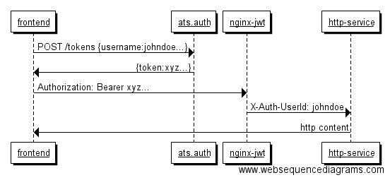

Getting Started¶
ats.auth is the AiC component responsible for issuing authentication tokens. It includes:
- a server application, that validates user credentials with the authentication backends and generates JWT tokens.
- a client application, to test the server and issue tokens - useful for debugging purposes.
The only authentication backend currently supported is Keystone.
ats.auth requires Python 3.5 and can be installed in a virtual environment.
Authentication tokens are then decoded by a reverse proxy server that verifies the signature and injects a user header in the forwarded request.

See also
- RFC 7519: JSON Web Token (JWT)
- for informations about the token structure
Installation¶
The program is usually deployed and configured with the ats.aic wrapper. If you really need to install it for development, you can do it in a Python 3.5 virtualenv with:
$ pyvenv-3.5 auth
$ . auth/bin/activate
(auth) $ mkdir auth/src; cd auth/src
(auth) $ git clone https://github.com/AiC-Project/ats.util.git
(auth) $ git clone https://github.com/AiC-Project/ats.client.git
(auth) $ git clone https://github.com/AiC-Project/ats.auth.git
(auth) $ cd ats.auth
(auth) $ pip install -r requirements/dev.txt
(auth) $ ats-auth --version
ats-auth 0.8